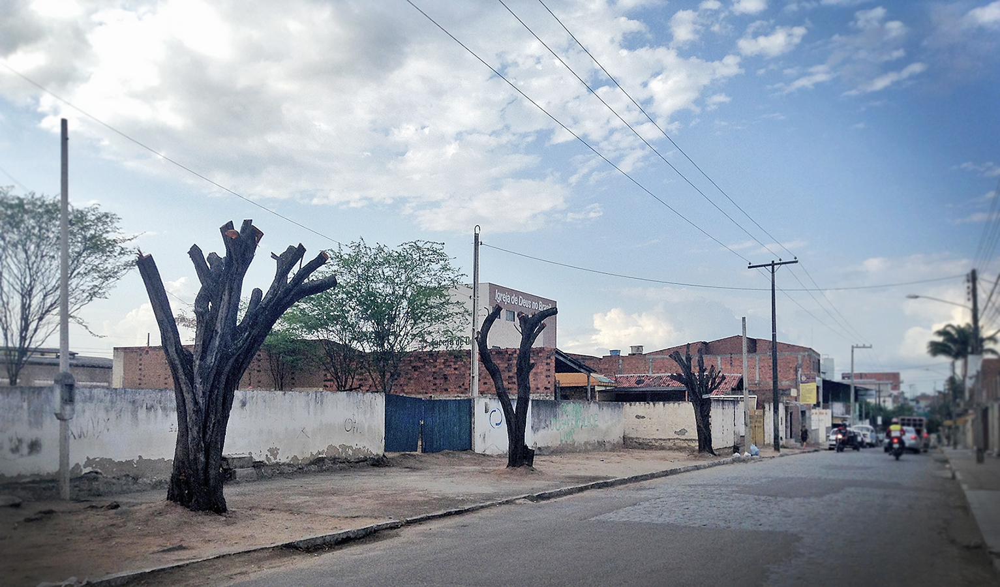
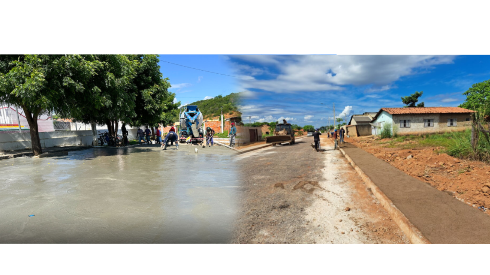

O que está acontecendo em Jequié
A falta de árvores e o desmatamento em áreas urbanas têm causado mudanças visáveis no clima da nossa cidade. Vários pontos apresentam pouca cobertura vegetal, o que afeta diretamente a temperatura, a umidade do ar e a qualidade de vida da população.
🌡️ Aumento da Temperatura
Sem a sombra e o resfriamento natural proporcionado pelas árvores, as superfícies asfaltadas e de concreto retêm calor, formando as chamadas "ilhas de calor". Nessas regiões, a temperatura pode chegar a ser até 5°C mais alta do que em áreas arborizadas.
💧 Redução da Umidade do Ar
As árvores liberam água na atmosfera, ajudando a manter o ar úmido. Sem elas, a umidade diminui, tornando o clima mais seco — o que prejudica a respiração, resseca a pele e agrava problemas respiratórios, especialmente em crianças e idosos.
🌳 Desmatamento e Perda de Áreas Verdes
Áreas que antes tinham vegetação estão sendo substituídas por construções e estradas. Isso reduz os espaços de convivência, afasta a fauna local e elimina o principal meio natural de limpeza do ar.
📸 Situação em Imagens
Área desmatada na cidade

Comparação: rua com e sem árvores
